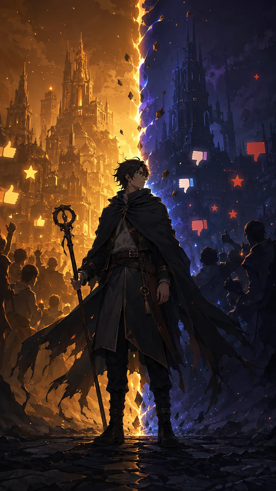
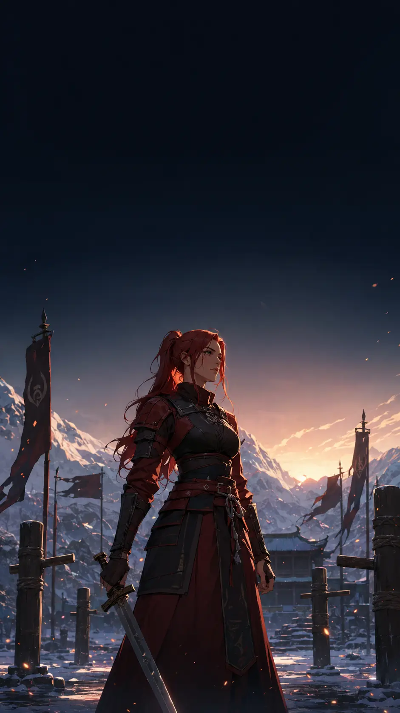
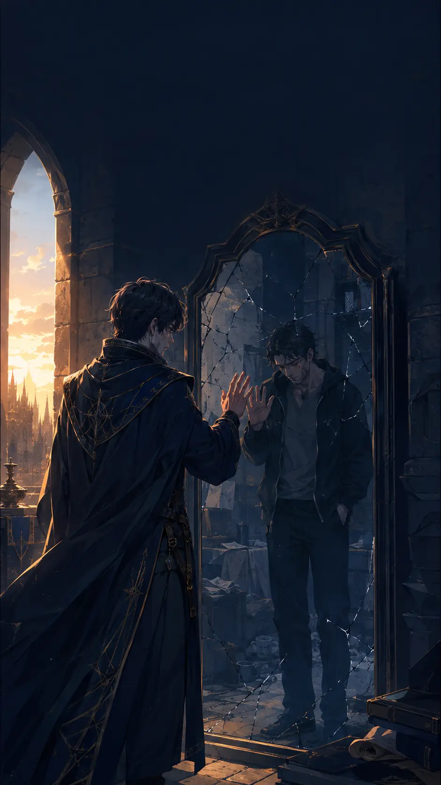
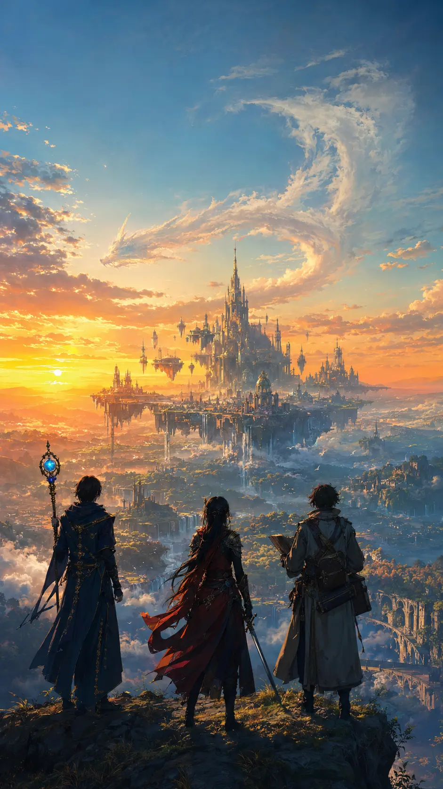

OLD MAN OTAKU / ANIME OPINION • AUGUST 3, 2026
Mushoku Tensei Season 3 Is Anime’s Most Problematic Hit of 2026—and That Argument Is Bigger Than Review Bombing
Season 3 is popular, beautifully produced and genuinely moving. It is also built around a protagonist whose behavior many viewers still consider impossible to excuse. Both statements can be true.

By RogueVerse Studio | August 3, 2026
Spoiler level: Light spoilers through Season 3, Episode 6. No major future light-novel reveals.
Mushoku Tensei: Jobless Reincarnation is back, and the internet has resumed a fight it never really finished.
The third season began during the July 4–5 weekend with a two-episode opening centered on Eris’s years of sword training before returning to Rudeus and the family he built during Season 2. Six episodes into the new run, the show is already one of Summer 2026’s strongest performers. It reached No. 2 in Anime Corner’s Week 4 poll with 6.86% of the vote, behind only Bleach: Thousand-Year Blood War – The Calamity. Its AniList page sat at an 85% average score when this article was prepared. Early episodes also drew thousands of IMDb votes and strong episode averages.
Those numbers establish something important: this is not a fringe show surviving only through outrage. Mushoku Tensei is a hit.
But “hit” and “unproblematic” are not synonyms. The series remains one of the hardest anime recommendations in modern fantasy because the same central choice that makes it distinctive—following a deeply damaged man across an entire second life—also keeps dragging viewers back toward material they find exploitative, ugly or morally evasive.
The lazy version of the debate says fans understand redemption while critics are offended by flawed characters. The equally lazy counterargument says anybody who likes the show approves of everything Rudeus does. Neither position survives contact with the actual series or its audience.
The real question is harder: how much moral growth must a story demand from its protagonist before the audience is asked to celebrate the life he builds?
What Season 3 is actually adapting
The official anime site says Season 3 begins with light novel Volume 13, following Rudeus after an unusually dense stretch of adulthood. He married Sylphie, reunited with Roxy, became a father, rescued his mother Zenith and lost his father Paul. The new season therefore opens less like a clean adventure and more like a family drama with a storm forming beyond the horizon.
Ryosuke Shibuya returns as director and also handles series composition, with Naoto Taniuchi sharing composition duties and Studio Bind continuing production. The show’s creative identity remains unusually consistent: lived-in environments, small gestures between characters, detailed magical systems and action that feels like it belongs to the physical world instead of being pasted over it. Crunchyroll’s Season 3 guide confirms the new season is streaming as it airs, while the English dub began July 19.
The first two episodes restore material about Eris that earlier seasons had left outside the main adaptation. That decision has been one of the season’s most popular choices. It gives her absence weight, shows the brutal work behind her growth and makes her eventual return feel like a parallel life moving toward Rudeus rather than a character waiting offscreen for the plot to call.

The production upgrade viewers noticed
Fan response to the premiere focused heavily on craft. In the Episode 1 discussion, viewers repeatedly compared the look and movement to Season 1, which remains the visual standard for many fans. Episode 3 comments praised the way magic was animated and described the production as a clear step up from portions of Season 2. Episode 4 drew enthusiasm for its nostalgia, domestic calm and Roxy’s demonstration of King-class water magic.
The quieter episodes have landed too. But Why Tho? gave Episode 5, “Celebrations,” a 9/10 review, praising the wedding, birthdays and Zenith’s small signs of awareness. Episode 6 then brought back Sara, mixed relationship closure with action and continued inserting Eris’s progress alongside Rudeus’s story. In the immediate Episode 6 fan discussion, viewers praised the monster animation, the adaptation’s improved faithfulness and the decision to keep Eris present instead of treating her storyline as a disconnected block.
Not every response has been glowing. Some viewers think the domestic stretch drags, especially when compared with the danger promised by the trailers. Others have complained about subtitle mistakes, adaptation omissions or an uneasy sense that the story is waiting for its next major turn. Those are ordinary television criticisms. They matter, but they are not why Mushoku Tensei has carried the label “problematic” since 2021.
Why “problematic” is not just clickbait
Rudeus begins as a 34-year-old shut-in who dies and is reborn as a baby while retaining his memories, desires and adult internal voice. That premise creates the series’ most uncomfortable contradiction. The world sees a child growing up; the audience hears an adult consciousness sexualizing people who are, at different points, children or teenagers.
Early episodes do not merely establish that Rudeus has bad thoughts. They turn voyeurism, theft of underwear, assaultive behavior and his fixation on girls into recurring comedy and fan service. The show sometimes condemns him through consequences, embarrassment or another character’s anger. At other times, the direction lingers on the same behavior for laughs or titillation.
That inconsistency is the problem. A story may depict terrible behavior without endorsing it, but framing still matters. If the camera treats a violation as a punchline, viewers are not unreasonable for questioning whether the story understands the harm as clearly as it understands Rudeus’s loneliness.
The controversy expanded beyond Rudeus’s sexual behavior. Season 2’s handling of slavery triggered another argument after Rudeus participated in purchasing the enslaved child Juliette. Creator Rifujin na Magonote explained that Rudeus did not possess a strong aversion to the institution within that world, then clarified that he personally did not condone slavery. For critics, the clarification did not resolve the narrative choice: the story offered more attention to Rudeus’s cultural neutrality than to the person whose freedom had been taken.
The series’ harem and polygamous family create a similar split. Fans see adults negotiating an unconventional household after grief, betrayal and social pressure. Critics see a fantasy arranged around rewarding the male lead, with women repeatedly absorbing the consequences of his choices. Season 3’s warm domestic scenes are effective precisely because Studio Bind gives the household texture and affection. Whether that warmth resolves the underlying power imbalance is a different question.

The best defense of Mushoku Tensei
The strongest defense is not that Rudeus is secretly a good person. It is that he is slowly learning to recognize other people as people.
In his first life, he withdraws from the world, treats relationships as distant fantasies and dies with almost nothing repaired. In the Six-Faced World, progress comes through attachment. Roxy helps him leave the house. Eris forces him to adapt. Ruijerd gives him a model of duty. Paul confronts him with the fact that being technically correct does not make him emotionally mature. Sylphie gives him stability. His sisters, wives, mother and daughter create responsibilities that cannot be solved by magical talent.
Fans are not imagining that growth. Season 3’s reunion with Sara works because Rudeus can finally face a painful mistake without turning the entire encounter into self-pity. His grief over Paul does not disappear after one dramatic episode; it influences the way he celebrates the family that remains. His attention to Zenith, Norn and Aisha reveals a man increasingly aware that love involves ordinary patience, not only heroic rescue.
That is why the series’ defenders find it powerful. They are watching a person who began below the moral floor construct a life through thousands of small corrections. Redemption, in that reading, is not purity. It is movement.

The show also earns loyalty through its world. Magic has rules and labor behind it. Travel changes relationships. Languages, geography, religion and politics shape what characters can understand. Time passes. Children grow. Injuries and grief leave marks. Friends introduced as temporary companions return years later with lives that continued offscreen. Season 3’s treatment of Eris and Sara reinforces that sense of a world that does not freeze whenever Rudeus leaves the room.
Add Studio Bind’s environmental animation, sound design and willingness to spend an episode on a meal or family celebration, and it is easy to understand why fans call Mushoku Tensei one of the best isekai adaptations ever made.
Why that defense does not settle the argument
Growth is not the same as accountability.
Rudeus becomes more dependable, loving and emotionally capable. Yet the series rarely asks him to fully name the harm behind some of his earlier conduct. His improvement often means behaving better inside the life he wanted, not reckoning with everyone he treated as an object while building it. The story is comfortable showing shame, depression and regret when Rudeus is hurt. It is less consistent about centering the interior lives of people harmed by him.
That gap matters because the narrative increasingly presents his household as a reward and proof of maturity. Viewers who accept the redemption arc see a beautiful payoff: the lonely man finally belongs somewhere. Viewers who reject it see the fantasy completing itself before the moral work is done.
There is also no rule requiring an audience to remain uncomfortable for dozens of episodes in hope that a protagonist eventually improves. “He gets better” is useful information, not a moral obligation to keep watching. Art can intentionally provoke disgust and still lose people because of that disgust. A viewer who stops is not necessarily misunderstanding the work. They may understand the bargain and decline it.
This is where the show’s loudest defenders occasionally weaken their own case. Treating every objection as censorship, Western sensitivity or hatred of flawed characters avoids the specific criticism. Most serious critics are not asking for a spotless hero. They are asking whether the series distinguishes clearly enough between depicting Rudeus’s ugliness and packaging it as entertainment.
Is Season 3 being review-bombed?
Possibly—but the available evidence needs careful language.
Screenshots circulated after the premiere showing an unusually large cluster of one-star IMDb ratings for Episodes 1 and 2. At the same time, both episodes maintained strong overall averages. That pattern can indicate organized downvoting, but a lopsided distribution alone does not prove coordination. Mushoku Tensei already has a large audience that sincerely dislikes it, and rating systems naturally attract the people with the strongest feelings.
The franchise also has history here. In 2021, Bilibili removed the anime in China amid accusations of misogyny and inappropriate sexual content, a fight involving influencer LexBurner, fan retaliation and advertiser pressure. Variety and the South China Morning Post documented the wider boycott. That episode demonstrated how rapidly criticism of the show can become a platform war.
Still, “review bombing” should not become a magic phrase that converts all low scores into bad faith. The cleanest signal is the full pattern: strong weekly rankings, high database averages, enthusiastic episode discussions, substantial one-star voting and persistent ethical criticism. The series is popular and polarizing at the same time.
Season 3’s early verdict
Six episodes in, Season 3 is making the best possible case for Mushoku Tensei without fundamentally changing what the series is.
The production looks confident. Restoring Eris’s missing development was smart. The family material has emotional weight, and Episode 6’s handling of Sara shows a version of Rudeus capable of confronting an old wound with more maturity than he once had. The adaptation is also weaving separate timelines together more effectively than a rigid volume-by-volume structure might have done.
But the season does not erase the argument surrounding its protagonist, and it should not try to erase it. Rudeus’s history is not an unfortunate marketing problem attached to an otherwise clean fantasy. It is the foundation of the story’s entire second-chance thesis.
The RogueVerse position is this: Mushoku Tensei is great at showing that a terrible person can become better. It is less convincing when it implies that becoming better automatically settles what came before.
That incompleteness may be why the show remains so difficult to dismiss. A simpler series would clean up Rudeus, punish him in one decisive scene and move on. Mushoku Tensei instead lets improvement, selfishness, love, lust, grief and cowardice coexist. Sometimes that produces unusually human drama. Sometimes it produces material that deserves every uncomfortable question aimed at it.
So yes, Crunchyroll has one of 2026’s biggest anime hits. Yes, Season 3 is off to a strong start. And yes, calling it problematic is still fair.
The more useful argument is not whether viewers are allowed to love or reject it. It is whether exceptional craft can carry a redemption story that still has moral debts left unpaid.
That answer belongs to each viewer. The debate, clearly, is not going anywhere.
Research notes and sources
- Official Mushoku Tensei anime site: Season 3 announcement and Volume 13 starting point
- MovieWeb report that prompted this RogueVerse investigation
- Official Japanese broadcast and streaming information
- Crunchyroll Season 3 guide
- Crunchyroll English dub announcement
- Anime Corner Summer 2026 Week 4 rankings
- AniList Season 3 entry
- IMDb Season 3 episode ratings
- Polygon’s Season 3 premiere review
- But Why Tho? Episode 5 review
- Episode 6 viewer discussion
- Variety on the 2021 Bilibili controversy
- South China Morning Post on the Bilibili removal and boycott